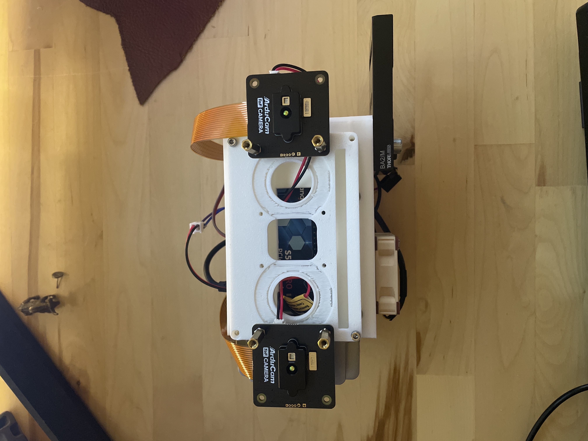

First Prototype
I started with a couple of components I already had laying around
- Noctua Fan from a 3D printer build I never ended up using would be a low-current, quiet way of cooling the internal raspberry pi
- Raspberry Pi 5 - I wanted two camera operating at the same time, and the raspberry pi 5 platform is the most user friendly, affordable way to get 2 CSI cameras working simultaneously
- 5V Regulator. I wanted to be able to hook this guy up to a range of power sources so I wouldn’t be limited in the field. You can power the whole thing with with anywhere from 5 to 24 volts.
- I was thinking, car battery? Makita cell?
- Neopixel rings for fun. If these are supposed to mimic eyes, I wanted the thing to be able to indicate status, or otherwise provide quick signaling for vision applications

Hardware Build

Enter Touchdesigner. Although intended as a tool for live entertainment and visuals, I quickly discovered its power as a sort of connective “glue” between the hardware nodes for this project.
Yes, I can use touchdesigner to make pretty pictures, but I can ALSO use it to accept high volumes of network data. I couldn’t afford a proper GiGe camera, but I had enough hubris to think I could spoof one for low-ish resolutions. As 180x240 pixels times two cameras, that wasn’t that much data to send overall.
If I could send a panoramic depth image with 32bit float values to a touchdesigner script, then I could leverage my GPU to do all sorts of interesting things with the data.
{kind=link}


Future Improvements
- Now that we have the rough locations of everything locked down, we can go back and design a cohesive shell that will fit all the components to more rigidly hold the camera boards so we can align them better in software and actually test for interference.